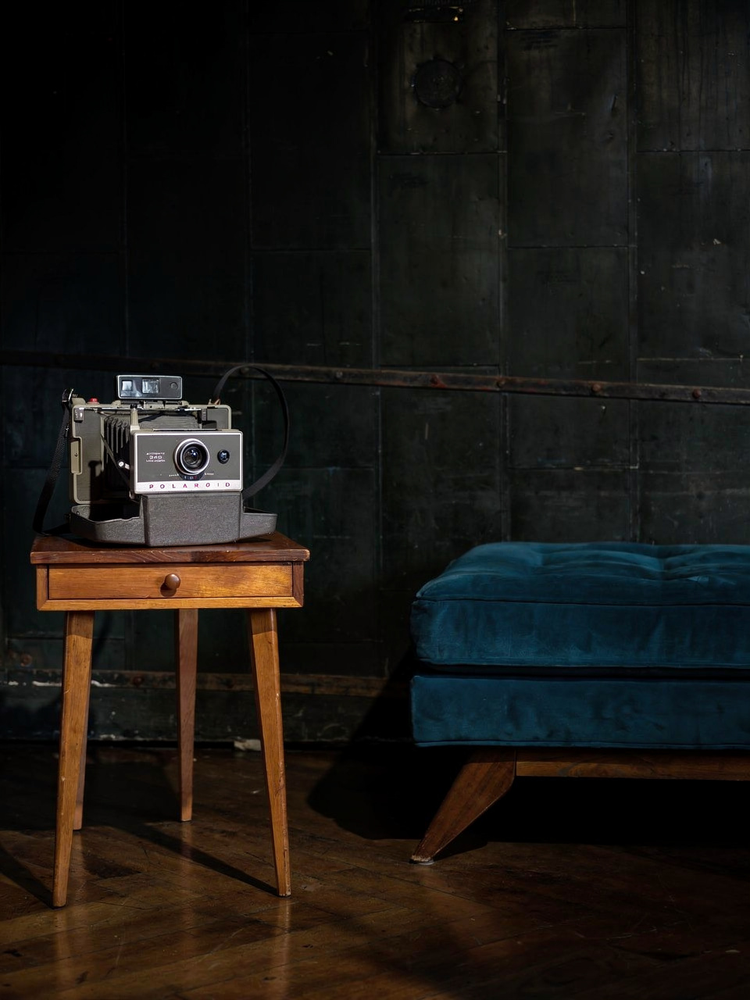

Polaroid Automatic 340 Land Camera
Photography & Cinema
← Back to collectionFolding bellows and the anticipation of a photograph taking shape in the hand.
The Polaroid Automatic 340 gives physical form to the idea of seeing a photograph take shape during the encounter it records. Harvard’s scientific-instrument collection dates the model to 1969–1971 and documents its folding bellows and automatic exposure as defining features of the model line. The contrast between the grey body and dark bellows makes the mechanism part of its visual appeal. The Automatic 340 was designed for a peel-apart film system rather than current integral film.